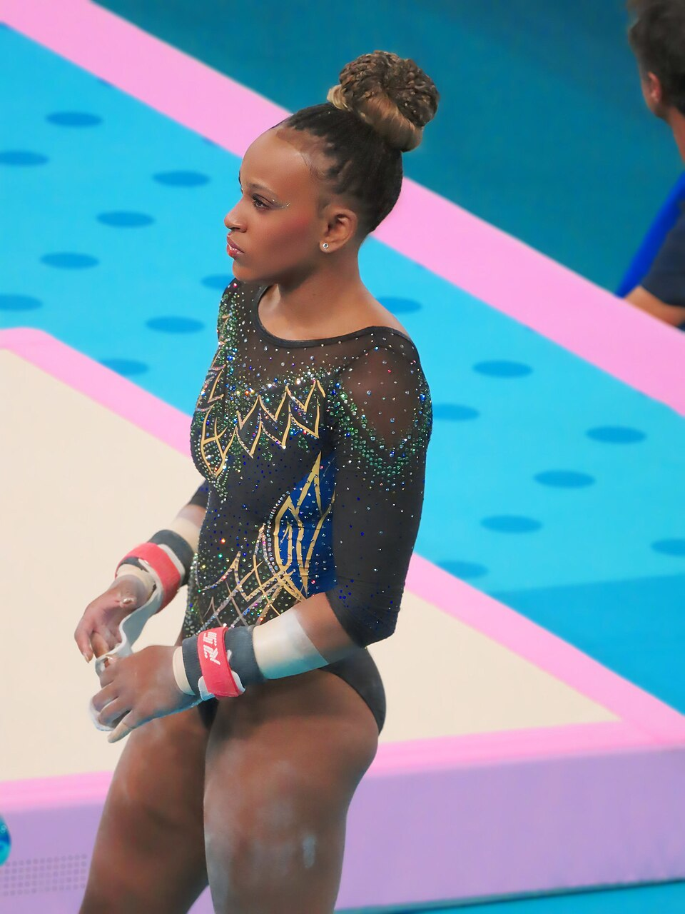

Rebeca Andrade escreveu mais um capítulo histórico para o esporte brasileiro. Neste sábado, 24 de outubro, a ginasta conquistou a medalha de ouro na final do salto sobre a mesa do Mundial de Ginástica Artística, disputado em Roterdã, nos Países Baixos, e se tornou tricampeã mundial do aparelho. A brasileira superou as norte-americanas Claire Pease e Skye Blakely e voltou ao lugar mais alto do pódio.
A conquista representa muito mais do que outra medalha na carreira da maior medalhista olímpica da história do Brasil. Aos 27 anos, Rebeca chegou ao décimo pódio em Campeonatos Mundiais, confirmou sua capacidade de competir entre as melhores do planeta e se tornou a primeira ginasta brasileira a conquistar três títulos mundiais em uma mesma prova.
O ouro também marcou o retorno de Rebeca ao pódio de um Mundial depois de três anos. A brasileira não disputava a competição desde 2023 e voltou a enfrentar a elite internacional com uma estratégia de preservação física, priorizando a qualidade da execução e a longevidade da carreira.
A conquista do ouro no salto
Rebeca chegou à final como uma das principais favoritas depois de liderar a fase classificatória, na qual alcançou média de 14,533 pontos. Na decisão, voltou a demonstrar uma de suas principais características: a capacidade de executar saltos de alto nível técnico com precisão.
A brasileira apresentou um Yurchenko com dupla pirueta no primeiro salto e recebeu 14,400 pontos, resultado de 5,000 de dificuldade e 9,400 de execução. A nota colocou Rebeca em posição favorável na disputa pelo título.
Na segunda apresentação, executou um Lopez, avaliado em 14,133 pontos, com 4,800 de dificuldade e 9,333 de execução. Com a bonificação de 0,200 ponto prevista na pontuação dos dois saltos, a brasileira terminou com média oficial de 14,466 pontos.
Veja os saltos abaixo:
Resultado da final do salto feminino:
- Rebeca Andrade (Brasil) — 14,466 pontos
- Claire Pease (Estados Unidos) — 14,233 pontos
- Skye Blakely (Estados Unidos) — 14,166 pontos
- Lia-Monica Fontaine (Canadá) — 14,083 pontos
- Ellie Black (Canadá) — 13,966 pontos
- Victoria Mata (México) — 13,933 pontos
- Yeo Seojeong (Coreia do Sul) — 13,716 pontos
- Abigail Martin (Grã-Bretanha) — 13,716 pontos
O resultado ganhou ainda mais importância porque Rebeca não precisou executar o Cheng, um de seus saltos de maior dificuldade. A brasileira apostou em movimentos que vinha trabalhando na preparação e conseguiu transformar a qualidade técnica em vantagem sobre as adversárias.
Tricampeonato mundial entra em um grupo histórico
Com a vitória em Roterdã, Rebeca passou a acumular três títulos mundiais no salto sobre a mesa, conquistados em três países diferentes.
O primeiro ouro veio em 2021, no Mundial de Kitakyushu, no Japão. Dois anos depois, em 2023, a brasileira voltou ao topo do pódio em Antuérpia, na Bélgica, em uma disputa que também teve Simone Biles entre as medalhistas.
O tricampeonato de 2026 colocou Rebeca ao lado da chinesa Cheng Fei, campeã mundial do salto em 2005, 2006 e 2007. Até então, a chinesa era a única ginasta a ter conquistado três títulos mundiais femininos nesse aparelho.
O feito também estabeleceu um recorde nacional. Rebeca se tornou a primeira representante brasileira, entre homens e mulheres, a vencer três vezes uma mesma prova em Campeonatos Mundiais de Ginástica Artística.
Antes disso, o Brasil tinha como referências de bicampeonato em um aparelho Diego Hypolito, vencedor do solo em 2005 e 2007.
Uma carreira entre as maiores da ginástica
O ouro de Roterdã elevou para dez o número de medalhas de Rebeca Andrade em Campeonatos Mundiais de Ginástica Artística.
Retrospecto em Mundiais:
- Total de medalhas: 10
- Ouros: 4 (três no salto e um no individual geral)
- Pratas: 4
- Bronzes: 2
- Título histórico: campeã mundial do individual geral em Liverpool, em 2022
A conquista de 2022 foi especialmente importante porque fez da brasileira a primeira ginasta do país campeã mundial do individual geral feminino, prova que reúne salto, barras assimétricas, trave e solo.
Somadas às conquistas olímpicas, os números da brasileira ficam ainda mais expressivos:
- Medalhas em Mundiais: 10
- Medalhas olímpicas (Tóquio e Paris): 6
- Total de pódios em Mundiais e Jogos Olímpicos: 16
No Mundial de 2026, essa estratégia ficou evidente. Rebeca concentrou suas apresentações individuais no salto e na trave, sem disputar o solo e o individual geral. A decisão faz parte de uma abordagem voltada à preservação física, com os Jogos Olímpicos de Los Angeles 2028 no horizonte.
Flávia Saraiva faz final no individual geral
O desempenho brasileiro no Mundial de Roterdã não ficou restrito ao ouro de Rebeca Andrade. Na sexta-feira, 23 de outubro, Flávia Saraiva e Lorrane Oliveira representaram o país na final do individual geral feminino.
O desempenho brasileiro no Mundial de Roterdã não ficou restrito ao ouro de Rebeca Andrade. A competição também contou com participações importantes das atletas, ampliando o protagonismo nacional entre as principais ginastas do mundo. O panorama das finais e resultados ajuda a dimensionar a campanha brasileira, marcada pelo título histórico de Rebeca e pela presença do país em decisões importantes da competição.
Flávia encerrou a competição na 12ª colocação. Foi sua sexta participação em uma final mundial de individual geral, mantendo uma trajetória de presença entre as principais ginastas da modalidade.
Notas de Flávia Saraiva na final do individual geral:
- Salto: 13,066
- Barras assimétricas: 13,300
- Trave: 13,233
- Solo: 13,200
- Total: 52,799 pontos
Apesar de não entrar na disputa direta pelo pódio, Flávia mostrou evolução em partes de suas apresentações e manteve a possibilidade de disputar uma medalha individual no aparelho em que tradicionalmente apresenta suas séries mais competitivas.
Volta à final mundial após 11 anos
A participação de Lorrane Oliveira também teve um significado especial. A brasileira voltou a disputar uma final de individual geral em Campeonato Mundial depois de mais de uma década, encerrando a competição na 21ª colocação.
Notas de Lorrane Oliveira na final do individual geral:
- Salto: 13,066
- Barras assimétricas: 13,700
- Trave: 11,066
- Solo: 13,100
- Total: 50,932 pontos
Apesar da frustração no último aparelho, o retorno a uma decisão mundial do individual geral representou um marco na trajetória da ginasta, que voltou a competir entre as melhores do mundo na soma dos quatro aparelhos.
Skye Blakely conquista o ouro no individual geral
A final disputada na sexta-feira também marcou a conquista de Skye Blakely, dos Estados Unidos, que ficou com a medalha de ouro do individual geral feminino ao somar.
A norte-americana apresentou regularidade nos quatro aparelhos e superou a russa Liudmila Roshchina, medalhista de prata. O bronze ficou com a chinesa Ke Qinqin.
Flávia Saraiva busca medalha na final da trave
O Brasil ainda terá uma última oportunidade de conquistar uma medalha. Flávia Saraiva disputará a final da trave de equilíbrio no domingo, 25 de outubro, em Roterdã, nos Países Baixos, com início previsto para as 10h40, pelo horário de Brasília, com transmissão do canal oficial do Time Brasil no YouTube. A brasileira garantiu presença na decisão com a terceira melhor nota da fase classificatória.
A final representa a chance de Flávia conquistar sua primeira medalha mundial individual na trave e ampliar um currículo que já inclui o bronze no solo e a prata por equipes no Mundial de Antuérpia, em 2023. Depois de terminar o individual geral de Roterdã na 12ª colocação, a ginasta terá a oportunidade de encerrar sua participação com um resultado expressivo em um de seus aparelhos de maior destaque.
Uma geração histórica da ginástica brasileira
A conquista da Rebeca Andrade no Mundial de Roterdã ultrapassa o significado de uma vitória individual. O tricampeonato do salto confirma a presença do Brasil entre as potências da ginástica artística feminina e amplia o legado de uma atleta que transformou os parâmetros de sucesso da modalidade no país.
Ao mesmo tempo, as participações de Flávia Saraiva e Lorrane Oliveira demonstram a importância da experiência e da continuidade competitiva para a seleção brasileira. Mesmo sem medalhas no individual geral, as duas disputaram uma das provas mais exigentes da ginástica mundial, enfrentando adversárias de alto nível nos quatro aparelhos.
Rebeca, por sua vez, mostrou que sua carreira não depende exclusivamente da execução de movimentos cada vez mais difíceis. A precisão, o planejamento e a capacidade de competir nos momentos decisivos continuam sendo fatores centrais de seu sucesso.
Com três títulos mundiais no salto, dez medalhas em Campeonatos Mundiais e seis pódios olímpicos, Rebeca Andrade consolidou mais uma conquista que permanecerá como referência para as próximas gerações.
O ouro de Roterdã não representa apenas a continuidade de uma carreira vitoriosa. É também a demonstração de que a maior ginasta brasileira da história segue capaz de transformar cada retorno ao cenário internacional em um novo capítulo de sua trajetória.